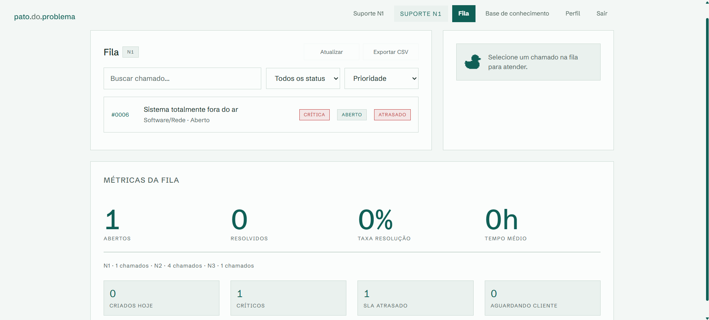
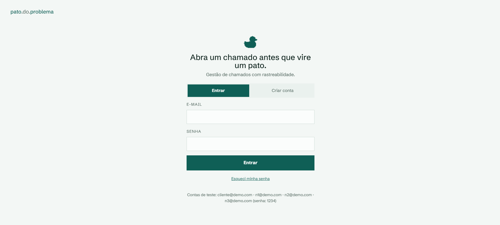
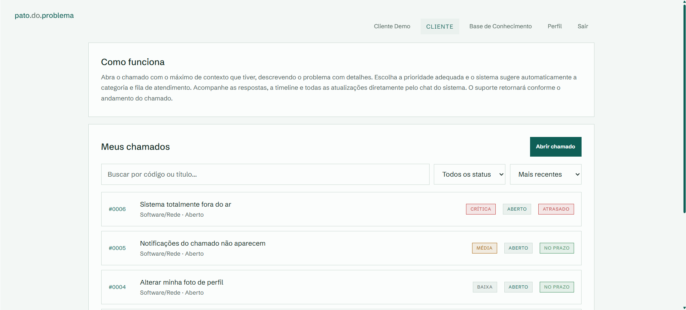

pato.do.problema
Internal Help Desk
Full-stack help desk system for internal support teams. Clients open tickets, follow progress through a shared chat, and support works a tiered queue (N1, N2, N3) with escalation, internal notes, attachments and a knowledge base.
- Problem
- Support requests lose context when they move between people or levels. This project keeps the full ticket history, escalation chain, messages and attachments visible to everyone involved at all times.
- Implementation
- Backend in FastAPI and Python with direct SQL, JWT authentication and bcrypt. Frontend in vanilla HTML, CSS and JavaScript. SQLite by default, PostgreSQL via environment variable. Deployed on Render with Docker. The Anthropic API is optionally wired to three features in the support panel: escalation summary, response suggestion and language adaptation.
- What it demonstrates
- Full-stack architecture, real authentication, role-based access across four user types, support-domain knowledge applied to actual product decisions, and practical AI integration without making it the focus of the project.
- FastAPI
- Python
- SQLite
- PostgreSQL
- JWT
- HTML
- CSS
- JavaScript
- Anthropic API
- Docker